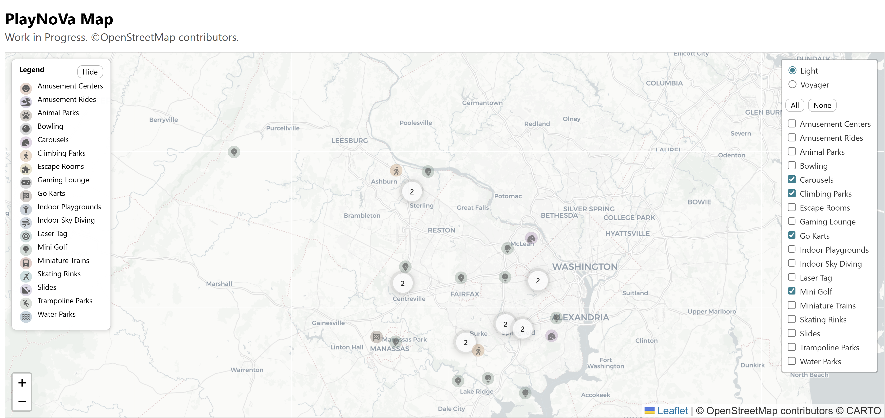
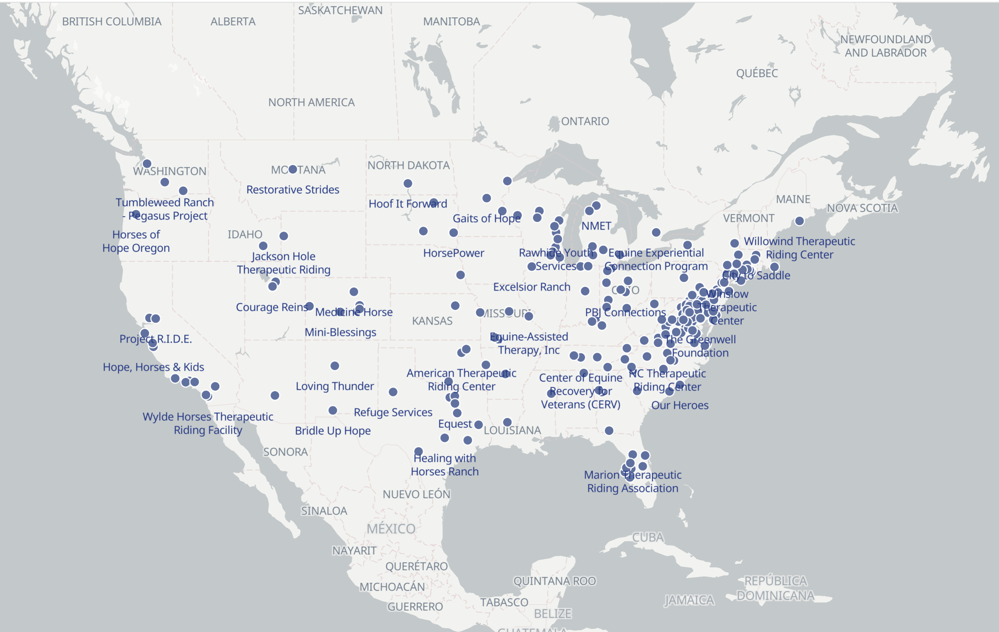

Web Maps
PlayNoVa Map

PlayNova is an interactive Web GIS application that highlights recreational and family-friendly destinations across Northern Virginia. The map dynamically ingests OpenStreetMap data through an automated Overpass workflow, converts features to GeoJSON, and deploys updates via GitHub Actions. Built with Leaflet and client-side filtering, the application provides an intuitive, continuously refreshed view of mini-golf courses, climbing parks, skating rinks, arcades, and other leisure activities.
Equine Assisted Centers

Equine Assisted Services Map is an interactive Ultra map developed alongside my OpenStreetMap tagging proposal
to formalize the use of a new tag social_facility=equine_assisted_centres.
These facilities use horses to support a client's physical, emotional, and educational growth. Powered by an Overpass query,
the map highlights facilities offering equine assisted services and improves their visibility in OpenStreetMap.
This project demonstrates how structured tagging and live query-backed mapping can strengthen the discoverability of community-based service providers.